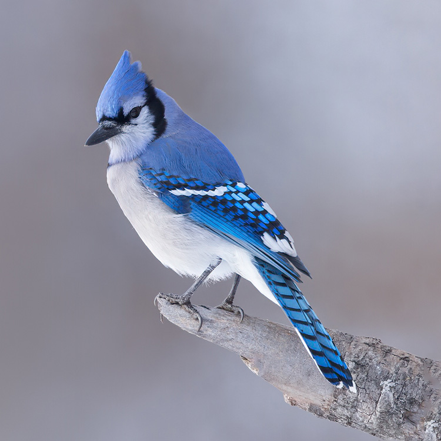
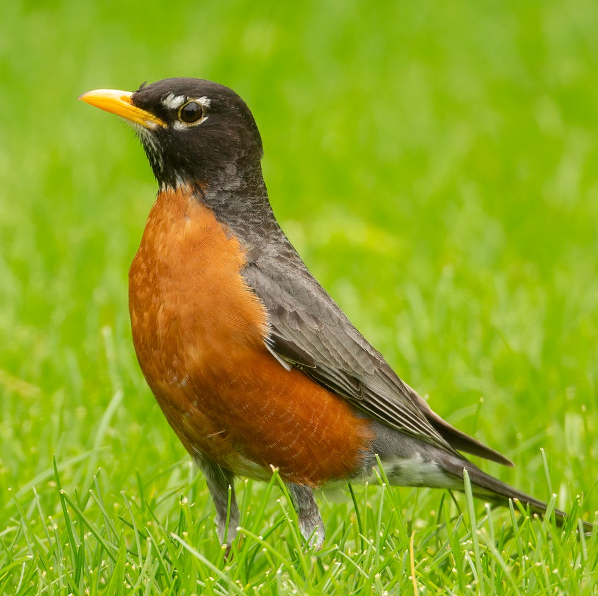
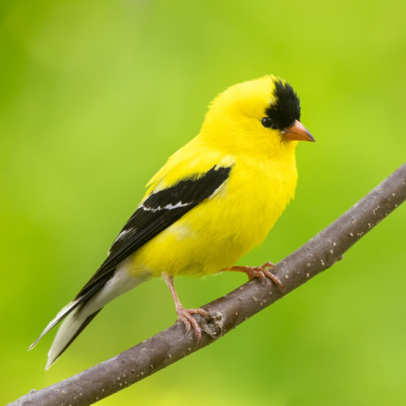
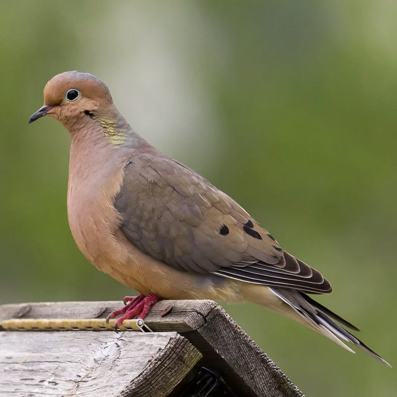
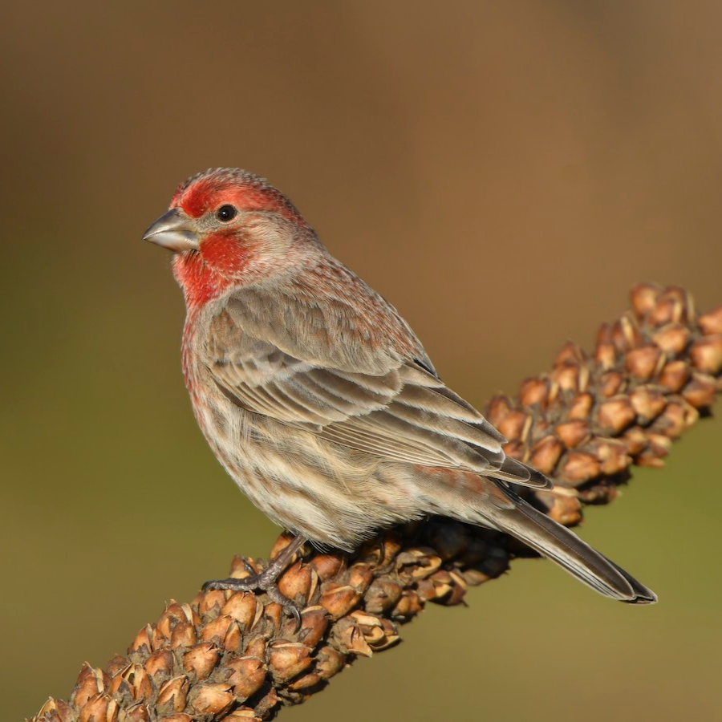
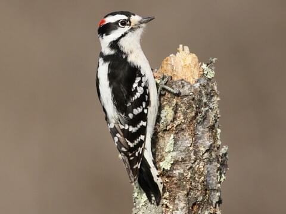

BACKYARD BIRDS




Blue Jay
Color: Blue, white, blackHabitat: Forests
Food: Omnivore
Nesting: Trees
Behavior: Ground Foraging
Fun Fact: Frequently mimic hawk calls to scare other birds away from food
Northern Cardinal
Color: Red (males) or brown (females)Habitat: Open Woodlands
Food: Seeds
Nesting: Shrubs
Behavior: Ground Foraging
Fun Fact: Exhibit aggressive territorial behavior during mating season
American Robin
Color: Black, gray, orangeHabitat: Open Woodlands
Food: Insects
Nesting: Trees
Behavior: Ground Foraging
Fun Fact: Known for eating worms
American Goldfinch
Color: Yellow, black, whiteHabitat: Open Woodlands
Food: Seeds
Nesting: Shrubs
Behavior: Foliage Gleaning
Fun Fact: State bird of New Jersey




Mourning Dove
Color: Light brownHabitat: Open Woodlands
Food: Seeds
Nesting: Trees
Behavior: Ground Foraging
Fun Fact: Wings make a whistling sound when they take flight
House Sparrow
Color: Brown, grayHabitat: Towns
Food: Omnivore
Nesting: Cavities
Behavior: Ground Foraging
Fun Fact: Prefer to nest in manmade structures
House Finch
Color: Brown, redHabitat: Towns
Food: Seeds
Nesting: Trees
Behavior: Ground Foraging
Fun Fact: Redder males are preferred by females
Downy Woodpecker
Color: White, black, redHabitat: Forests
Food: Insects
Nesting: Cavities
Behavior: Bark Foraging
Fun Fact: Knock on hard surfaces to establish territory